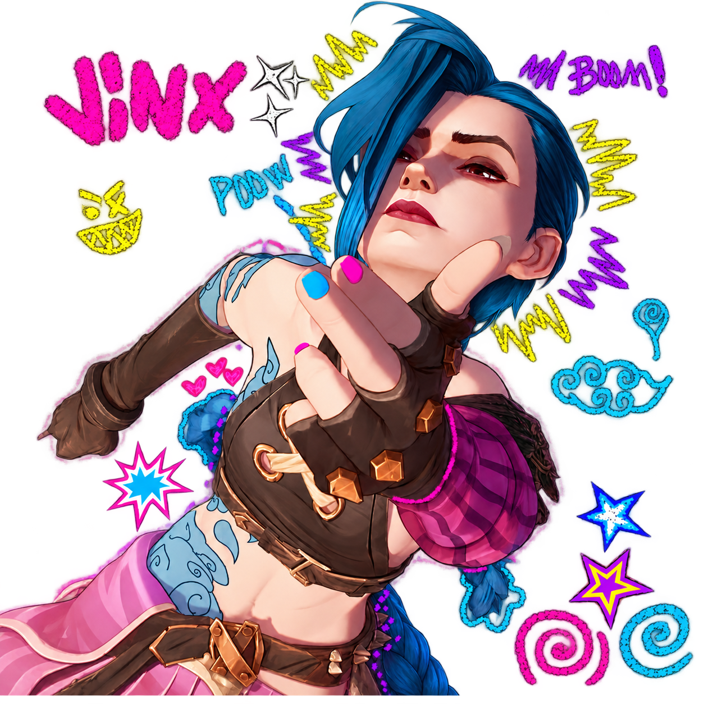

KAMUSARI / RIFTBOUND
SUMMONER’S
RIFT//
Seu próximo elo começa na mesa.
QUINTA + DOMINGOSó o melhor resultado da semana conta.

1ªTEMPORADA
DO FERRO AO DESAFIANTE
Na disputa pelo topo.
| POS. | JOGADOR | ELO | PDL TOTAL | PROGRESSO |
|---|
A temporada começa com você.
Aguardando os primeiros resultados.
Resultados da temporada
DEGRAU POR DEGRAU
A sua escalada.
100 PDL para cada novo elo.
COMO FUNCIONA
Dois dias.
Uma campanha.
Jogue quinta, domingo ou nos dois dias. Apenas o seu melhor torneio da semana entra no ranking.
Temporadas acompanham uma coleção. Torneios precisam de pelo menos 8 participantes.
+40POR VITÓRIA
−15POR DERROTA
+5PELO TÍTULO
Em MD3, vale o resultado do confronto. Os pontos excedentes seguem para o próximo elo. No Desafiante, a disputa continua pela maior pontuação total.